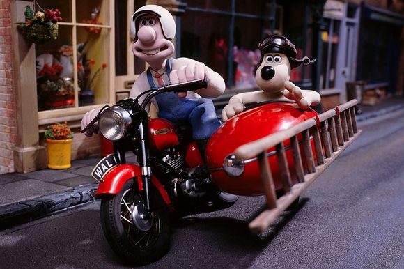

<div id="idMapLinkrPlugin" aria-labelledby="mapLinkrLabel" aria-hidden="true" style="margin-left: -10px; margin-right: -10px;" class="modeless col-sm-12 col-xs-12">
    <div style="margin-left: -10px; margin-right: -10px;" class="modal-content">
        <div class="modal-header">
            <div id="mapLinkrLabel" style="font-size: 1.5rem" class="modal-title col-sm-12"><span>MapLinkr <button type="button"
data-dismiss="modal" aria-hidden="true" ng-click="cancel()" class=
"close col-sm-1 col-xs-6"><span><span><span>×</span></span>
                </span>
                </button>
                </span>
            </div>
        </div>
        <div style="margin-left: -10px; margin-right: -10px;" class="modal-body">
            <div id="mapLinkrInfo" role="tablist" aria-multiselectable="true">
                <div style="margin-bottom: 0.5rem" class="card">
                    <div role="tab" id="idLatestNews" style="padding: 0.5rem 0.5rem" class="card-header"><button type="button" data-toggle="collapse" ng-click="onShowHideMapLinkrClicked('news')" data-target="idLatestNewsCard" aria-expanded="false" aria-controls="idLatestNewsCard" class="btn btn-labelled btn-primary"><span class="btn-label">MapLinkr
News</span></button></div>
                    <div id="idLatestNewsCard" role="tabpanel" uib-collapse="mldata['news'].isCollapsed" aria-labelledby="idLatestNews" class="card-collapse collapse">
                        <div class="card card-block">
                            <div class="container">
                                <div style="font-size:1.25em;border:2px solid red;margin:1px;padding:2px;">
                                    <h4 style="color:red">Latest Release</h4>
                                    <h5 style="color:red">Release notes will appear here as new
features are added to the MapLinkr plug-in.</h5>
                                    <h5>Select the MapLinkr Instruction accordion pane below for
step-by-step help.</h5>
                                </div>
                                <h4>OTHER GREAT STUFF</h4>
                                <br>
                                <br>
                                <h5>Wallace and Gromit Use MapLinkr.</h5>
                                <p style="font-size: 1.2em;color: #333333; border:2px solid green;margin:1px;padding:2px;">
                                    Wallace and Gromit have improved the efficiency of their window washing service by incorporating community maps of reported dirty windows.
                                </p>
                                <br></div>
                        </div>
                    </div>
                </div>
                <div style="margin-bottom: 0.5rem" class="card">
                    <div role="tab" id="idUsingMapLinkr" style="padding: 0.5rem 0.5rem" class="card-header"><button type="button" data-toggle="collapse" ng-click="onShowHideMapLinkrClicked('using')" data-target="idUsingMapLinkrCard" aria-expanded="false" aria-controls="idUsingMapLinkrCard" class="btn btn-labelled btn-primary"><span class="btn-label">Using
MapLinkr</span></button></div>
                    <div id="idUsingMapLinkrCard" role="tabpanel" uib-collapse="mldata['using'].isCollapsed" aria-labelledby="idUsingMapLinkr" class="card-collapse collapse">
                        <div class="card card-block">
                            <div class="container">
                                <p style="font-size:1.1em;margin:0.3em">MapLinkr allows viewing mulitple synchronized maps in separate windows. The maps can use base maps or different themes for overlays. Unlike standard layer overlays in a single viewer, the base layers and overlays do not
                                    interfere with the visibility of other selected layers.</p>
                                <p style="font-size:1.1em;margin:0.3em;">Linked maps can be created from three map viewer sources, if the viewer system incorporates the MapLinkr plug-in.</p>
                                <ul id="MapTypes" style="height:100%">
                                    <li class="acc li">1 A web page with an ArcGIS webmap viewer.</li>
                                    <li class="acc li">2 A web page with a google map display.</li>
                                    <li class="acc li">3 A web page with an open source map display.
                                    </li>
                                </ul>
                                <h3 style="text-align:left">Steps for Google and Leaflet maps</h3>
                                <p style="font-size:0.75em;margin:0.3em">Pan and zoom a Google or Leaflet map to the desired extent. In a Google map display, the search tool will appear. Enter a search category to display search results on the map.</p>
                                <p style="font-size:1.1em;margin:0.3em">Further sharing instructions are provided under the "Sharing Overview" accordion pane.
                                </p>
                                <h3 style="text-align:left">Steps for ArcGIS Online search</h3>
                                <ul id="StepsList" style="height:100%">
                                    <li class="acc li">1. Open the accordion pane for group search. Enter a search term and click the submit button.</li>
                                    <li class="acc li">2. The group pane displays groups matching the search term. Click on one of the groups.</li>
                                    <li class="acc li">3. The map selection pane opens showing available maps in the group. Click on a map item. A dialog opens offering a choice of three possible destination viewers where the selected map can be displayed. The most convenient
                                        option is usually the "New Window" option.
                                        <div id="repeater" ng-repeat="(key, val) in mldata.using.destchoices" class="ng-scope">
                                            <div class="card">
                                                <div role="tab" id="destHeader{{key}}" class="card-header">
                                                    <button type="button" data-toggle="collapse" ng-click="onShowHideDestChoiceInstructionsClicked(key)" style="padding-left: 0.1rem;" data-target="#destChoice{{key}}" aria-expanded="false" aria-controls="destChoice{{key}}" class="btn btn-labelled btn-primary"><span class=
"btn-label">{{key}}</span></button>
                                                    <div id="destChoice{{key}}" role="tabpanel" uib-collapse="mldata.using.current['{{key}}']" aria-labelledby="destHeader{{key}}" class="card-collapse in collapse">
                                                        <div class="card card-block">
                                                            <div class="container"></div>
                                                            {{val.details.text}}</div>
                                                    </div>
                                                </div>
                                            </div>
                                        </div>
                                    </li>
                                    <li class="acc li">4. Create a Pusher channel. A second dialog opens, requesting a Pusher channel name. Specify a name that will be unique for the shared session.</li>
                                </ul>
                                <h3 style="text-align:left;">Experiment with synchronized
maps:</h3>
                                <ul id="StepsListSynch" style="height:100%;">
                                    <li style="font-weight:bolder" class="acc li">a. Resize and move any open map viewer windows so that they are simultaneously visible.
                                    </li>
                                    <li style="font-weight:bolder" class="acc li">b. Pan and zoom any map. Maps in other synchronized viewers should pan and zoom to the same location and scale.</li>
                                    <li style="font-weight:bolder" class="acc li">c. Click on any open map. A popup will show either information for the item at the map location or the coordinates/address of the click. Clicking the share button will cause a popup to appear at the same location in
                                        other map viewers.</li>
                                </ul>
                            </div>
                        </div>
                    </div>
                </div>
                <div style="margin-bottom: 0.5rem" class="card">
                    <div role="tab" id="idLocateSelf" style="padding: 0.5rem 0.5rem" class="card-header"><button type="button" data-toggle="collapse" ng-click="onShowHideMapLinkrClicked('locateself')" data-target="idLocateSelfCard" aria-expanded="false" aria-controls="idLocateSelfCard" class="btn btn-labelled btn-primary"><span class="btn-label">Locate
Self</span></button></div>
                    <div id="idLocateSelfCard" role="tabpanel" uib-collapse="mldata['locateself'].isCollapsed" aria-labelledby="idLocateSelf" class="card-collapse collapse">
                        <div class="card card-block">
                            <div class="container">
                                <div ng-controller="LocateSelfCtrl">
                                    <p style="font-size:1.25em;margin:0.3em">Find your location and zoom to a symbol at that location</p>
                                    <button style="margin-left: 1em;" ng-click="geoLocate()" value="Find My Location" class="btn">Find My Location</button></div>
                            </div>
                        </div>
                    </div>
                </div>
                <div style="margin-bottom: 0.5rem" class="card">
                    <div role="tab" id="idGroupSearcher" style="padding: 0.5rem 0.5rem" class="card-header"><button type="button" data-toggle="collapse" ng-click="onShowHideMapLinkrClicked('groups')" data-target="idGroupSearcherCard" aria-expanded="false" aria-controls="idGroupSearcherCard" class="btn btn-labelled btn-primary"><span class="btn-label">AGO Group
Search</span></button></div>
                    <div id="idGroupSearcherCard" role="tabpanel" uib-collapse="mldata['groups'].isCollapsed" aria-labelledby="idGroupSearcher" class="card-collapse collapse">
                        <div class="card card-block">
                            <div class="container">
                                <div id="SearchGroup" ng-controller="SearcherCtrlGrp">
                                    <div id="searchToolWrapperGroup"><span><label id="grpSearchLabel"
for="signInGroup" style="font-size:12pt;">AGO Group Search</label>
<button id="signInGroup" name="signInGroup" ng-click=
"signInFromGroupTab();" style=
"width: 5rem; padding-left: 0.4em; margin-left: 0.1em; font-size:80%"
class=
"btn"><span><span><span>{{signInOutGrp}}</span></span>
                                        </span>
                                        </button>
                                        </span>
                                        <h5 id="grpSrchInstId" style="padding:2px 3px;margin: 2px 3px;">
Find group ids based on search term. Sign-in to search for private
groups.</h5>
                                        <span style="display: {{findGrpDisabled}};"><input name=
"groupFinder" id="groupFinder" ng-model="searchTermGrp" ng-enter=
"findArcGISGroup();" style="width: 15rem;"> <button name=
"groupFinderSubmit" id="groupFinderSubmit" ng-click=
"findArcGISGroup();" style="margin-left: 0.2em;" class=
"btn"><span style="display: {{findGrpDisabled}};"><span style=
"display: {{findGrpDisabled}};"><span style=
"display: {{findGrpDisabled}};">Submit</span></span>
                                        </span>
                                        </button>
                                        </span>
                                        <div id="grpGridId" ui-grid="gridGrpOptions" ui-grid-pinning="ui-grid-pinning" ui-grid-expandable="ui-grid-expandable" style="font-size: 0.8rem; display: {{findGrpDisabled}};" class="grid">
                                        </div>
                                    </div>
                                </div>
                            </div>
                        </div>
                    </div>
                </div>
                <div style="margin-bottom: 0.5rem" class="card">
                    <div role="tab" id="idMapSearcher" style="padding: 0.5rem 0.5rem" class="card-header"><button type="button" data-toggle="collapse" ng-click="onShowHideMapLinkrClicked('maps')" data-target="idMapSearcherCard" aria-expanded="false" aria-controls="idMapSearcherCard" class="btn btn-labelled btn-primary"><span class="btn-label">AGO Map
Search</span></button></div>
                    <div id="idMapSearcherCard" role="tabpanel" uib-collapse="mldata['maps'].isCollapsed" aria-labelledby="idMapSearcher" class="card-collapse collapse">
                        <div class="card card-block">
                            <div class="container">
                                <div id="SearchMap" ng-controller="SearcherCtrlMap">
                                    <div id="searchToolWrapperMap"><span><label id="mapSearchLabel"
for="signInMap" style="font-size:12pt;">AGO Map Search</label>
<input type="button" id="signInMap" name="signInMap" ng-click=
"signInFromMapTab();" style="width:30%;font-size:80%" value=
"{{signInOutMap}}" class="btn"></span>
                                        <h5 id="mapSrchInstId" style="padding:2px 3px;margin: 2px 3px;">
Find map ids based on search term. Sign-in to search for private
groups.</h5>
                                        <span><input name="mapFinder" id="mapFinder" ng-model=
"searchTermMap" ng-enter="findArcGISGroupMaps()"> <input name=
"mapFinderSubmit" ng-disabled="findMapDisabled" type="submit"
value="Submit" id="mapFinderSubmit" ng-click=
"findArcGISGroupMaps();" class="btn"></span>
                                        <div id="mapGridId" ui-grid="gridOptions" ui-grid-pinning="ui-grid-pinning" ui-grid-expandable="ui-grid-expandable" style="font-size: 0.8rem;" class="grid"></div>
                                    </div>
                                </div>
                            </div>
                        </div>
                    </div>
                </div>
                <div style="margin-bottom: 0.5rem" class="card">
                    <div role="tab" id="idSharingInstructionsHeader" style="padding: 0.5rem 0.5rem" class="card-header"><button type="button" data-toggle="collapse" ng-click="onShowHideMapLinkrClicked('shareinst')" data-target="idSharingInstructionsCard" aria-expanded="false" aria-controls="idSharingInstructionsCard" class="btn btn-labelled btn-primary"><span class="btn-label">Sharing
Overview</span></button></div>
                    <div id="idSharingInstructionsCard" role="tabpanel" uib-collapse="mldata['shareinst'].isCollapsed" aria-labelledby="idSharingInstructionsHeader" class="card-collapse collapse">
                        <div class="card card-block">
                            <div class="container">
                                <h3>Concepts and Features</h3>
                                <p style="font-size:1.25em;margin:0.3em">Multiple users can view synchronized maps in web browsers on | other devices. After finding (1) a Google Map or Leaflet | Map or (2) an ArcGIS WebMap that you want to share:</p>
                                <h5>For Google or Leaflet Map</h5>
                                <p style="font-size:1.25em;margin:0.3em">After selecting a map exent and zoom level (and optionally performing a spatial query | using the Google search too), perform two steps:</p>
                                <ul id="StepsForPublishing" style="height:100%">
                                    <li class="acc li">1. If you haven't subscribed to a Pusher channel or entered a user/collaborator name, open the "Set Pusher Channel" accordion pane, and follow the instructions to enter these details.
                                    </li>
                                    <li class="acc li">2. Open the "Publish Current Url" accordion pane and click the "Publish Url" button. This will open a new window with the current zoom, extent, and search returns on the publisher's system, and will open the same new
                                        window on all collaborators' systems.</li>
                                </ul>
                                <h5>For ArcGIS Online Webmap</h5>
                                <ul id="StepsSharing" style="height:100%">
                                    <li class="acc li">1. Open the "Copy MapLinkr Url" accordion pane. The url for the current host site will be inserted in the text field and will be focused and selected.</li>
                                    <li class="acc li">2. Use Ctrl-C to copy it to the clipboard.</li>
                                    <li class="acc li">3. Paste the link in a text message or email to collaborators or in a shared chat window.</li>
                                </ul>
                                <p style="font-size:1.25em;margin:0.3em">The url includes the name of the Pusher channel that you have selected. As users open the link, they will be subscribing to share map clicks, pans and zooms with all other users as any user manipulates any map view.</p>
                                <br>
                                <p style="font-size:1.25em;margin:0.3em">The Pusher channel can also be set without opening a new map viewer by opening the "Set Pusher Channel" accordion pane. Share this channel name with collaborators to synchronize their displays with your display. This step
                                    is necessary if you and your collaborators want to synchronize map views where all collaborators already have synchronize-capable maps open.</p>
                                <br>
                                <p style="font-size:1.25em;margin:0.3em">At any time a user has opened a new ArcGIS map and desires to share the map with collaborators, the "Publish Current Url" pane provides the necessary tool. The user opens the accordion pane in the window containing the
                                    map to be shared and clicks the "Publish Url" button.
                                </p>
                                <br></div>
                        </div>
                    </div>
                </div>
                <div style="margin-bottom: 0.5rem" class="card">
                    <div role="tab" id="idUrlCopyHeader" style="padding: 0.5rem 0.5rem" class="card-header"><button type="button" data-toggle="collapse" ng-click="onShowHideMapLinkrClicked('copyurl')" data-target="idUrlCopyCard" aria-expanded="false" aria-controls="idUrlCopyCard" class="btn btn-labelled btn-primary"><span class="btn-label">Share
Maps</span></button></div>
                    <div id="idUrlCopyCard" role="tabpanel" uib-collapse="mldata['copyurl'].isCollapsed" aria-labelledby="idUrlCopyHeader" class="card-collapse collapse">
                        <div class="card card-block">
                            <div class="container">
                                <div name="emailForm" ng-controller="ShareCtrl"><label style="font-size:12pt;margin:4px">Fetch the link to the current ArcGIS
Online map:</label> <button style="width:100%;" ng-click="fetchUrl()" value="Copy Url to Clipboard" class="btn">Copy Url to
Clipboard</button>
                                    <div id="UrlInstructions" style="display:none"><label style="font-size:12pt;margin:2px" class="The">url is now focused and
selected.</label> <label style="font-size:12pt;margin:2px" class="Now">use Ctrl-C to copy to clipboard.</label> <label style="font-size:12pt;margin:2px" class="Then">paste the link into an
email, text message, or chat session.</label></div>
                                    <textarea id="UrlCopyFieldID" type="url" name="input" style="overflow-y: scroll; overflow-x: none; resize: none; width: 100%; height: 120px;" required="required"></textarea></div>
                            </div>
                        </div>
                    </div>
                </div>
                <div style="margin-bottom: 0.5rem" class="card">
                    <div role="tab" id="idChannelSetterHeader" style="padding: 0.5rem 0.5rem" class="card-header"><button type="button" data-toggle="collapse" ng-click="onShowHideMapLinkrClicked('setchannel')" data-target="idChannelSetterCard" aria-expanded="false" aria-controls="idChannelSetterCard" class="btn btn-labelled btn-primary"><span class="btn-label">Set
Channel</span></button></div>
                    <div id="idChannelSetterCard" role="tabpanel" uib-collapse="mldata['setchannel'].isCollapsed" aria-labelledby="idChannelSetterHeader" class="card-collapse collapse">
                        <div class="card card-block">
                            <div class="container">
                                <div ng-controller="PusherSetupCtrl">
                                    <p style="font-size:1.25em;margin:0.3em">Set or change the Pusher communications channel.</p>
                                    <button style="width:100%;" ng-click="displayPusherDialog()" value="Set Channel" class="btn">Set Channel</button></div>
                                <div id="PusherChannelDialog"></div>
                            </div>
                        </div>
                    </div>
                </div>
            </div>
        </div>
    </div>
</div>
